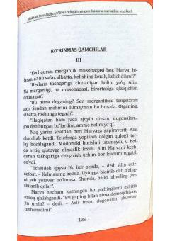

STOg'ir ruhiy sinovlar va xiyonat girdobidan qutulib, o'zini topishga intilayotgan ayol haqida hikoya.
Ushbu asar shaxsiy inqirozlar, xiyonat va ichki og'riqlarni yengib o'tish, shuningdek, insonni toliqtiruvchi salbiy munosabatlardan voz kechish jarayonlari haqida hikoya qiladi. Kitob qahramoni Marvaning boshidan kechirgan og'in-sinovlari va o'zini topish yo'lidagi ruhiy kurashlari ochib beriladi.